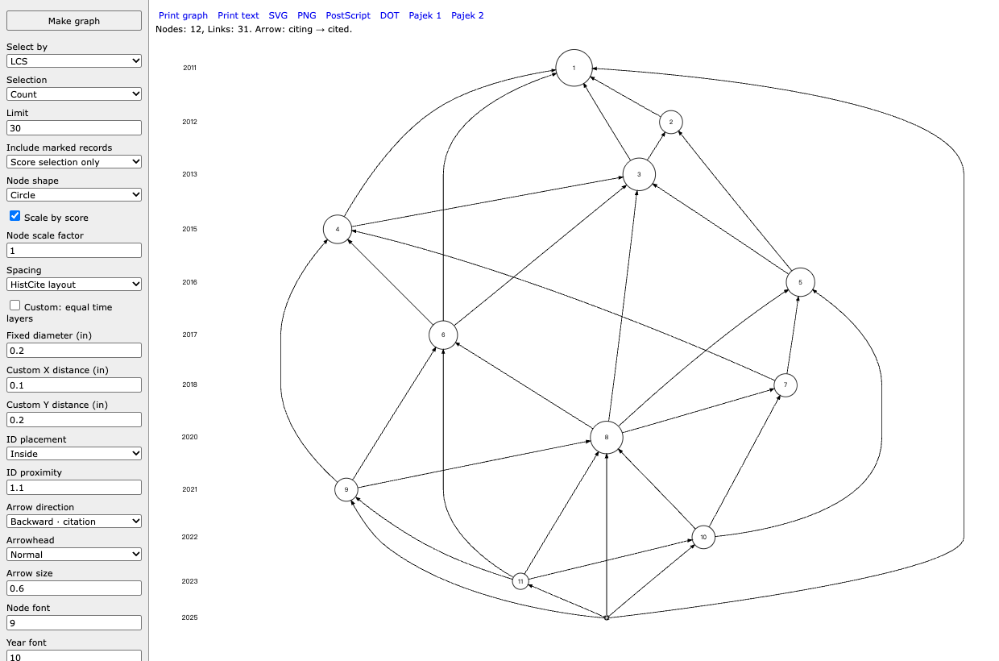

HistCite Mac
Native macOS citation analysis for Web of Science.
Find the papers that connect your literature collection. Import WoS records, compare LCS and GCS, and draw citation histories on your Mac.
An independent project by yangnim21029, not an official HistCite release or affiliated with its original team.
Free and open source. macOS 13 or later; Apple Silicon and Intel. English interface. No Windows or Wine required.

Explore your literature collection
Compare citation indicators
LCS counts citations within your collection. GCS is the citation count recorded in the WoS export; it does not update automatically.
Follow research over time
Use Graph Maker to see which papers cite one another. Open a record to read its abstract, references and bibliographic details.
Keep analysis on your Mac
Group records by author, journal or year, save your collection, and export tables or graphs. Literature data stays on your computer.
Start with a WoS export
- Install the app. Download the Universal DMG and drag HistCite Mac into Applications. The same download supports Apple Silicon and Intel.
- Export your records. In Web of Science, choose Plain Text and Full Record and Cited References. Keep your original files.
- Open your collection. Choose File → Open collection…. Sort by LCS or GCS, then use Tools → Graph Maker… to draw a graph.
Try the included 12-record fictional dataset before using research data.
First launch: the community build is not Apple-notarized. If macOS blocks it, follow the installation instructions after confirming the download source.
HistCite on Mac: common questions
Is there a native Mac version of HistCite?
HistCite Mac is an independent native macOS implementation by yangnim21029. It follows HistCite workflows and runs without Windows, Wine, CrossOver or a virtual machine. It is separate from the original Windows HistCite and HistCite Pro.
Is this an official release from the original HistCite team?
No. Credit for the original HistCite belongs to Eugene Garfield and collaborators. This independent project is not affiliated with that team and does not contain the original HistCite program code or executable.
What data can I import?
Web of Science tagged plain-text exports, HistCite collections (.hci), and HistCite Mac collections (.hcm). Native Scopus exports and spreadsheets need conversion to a supported format first.
How has compatibility been checked?
Comparisons cover specific datasets and operation sequences, including citation scores and graph layouts. They do not establish equivalence for every input. Read the validation scope and known limits.
Community thanks
Thanks to RefTools and Awesome Scholarly Data Analysis for listing HistCite Mac, and to 绿软下载 and 小狼成长实验室 for their introductions.